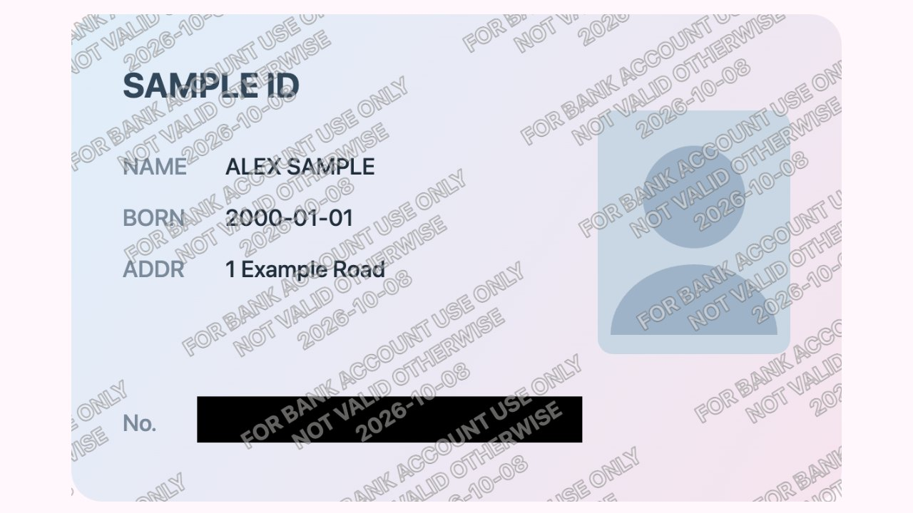
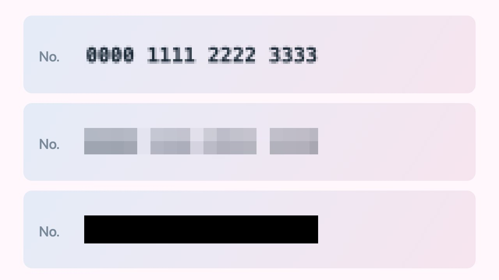

ID Watermark & Redact · 身份证水印打码
ID copy watermark & photo mosaic — on your device
Tile “for [org] use only + date” across an ID copy, black out numbers, pixelate faces. Nothing is uploaded.
身份证加「仅供XX使用」水印，拖框打马赛克，本地处理不上传。

Black box for numbers, mosaic for faces
A fine mosaic can leave digits readable; a coarse mosaic or a black box cannot.

Guides · 教程
- How to watermark an ID copy · 身份证复印件怎么加水印
- How to pixelate part of a photo · 怎么给图片打马赛克
- How to add a watermark to a photo · 怎么给照片加水印
Open-source engine: github.com/mantoufan/id-watermark · More tools at cv.cm